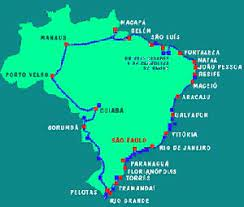

Fatos sobre o Stomatopoda
O mais completo sistema de visão do mundo animal
O Stomatopoda (Odontodactylus scyllarus) conhecido popularmente como como tamarutaca ou lacraias-do-mar no brasil, são crustáceos onocientes das cores que enxergam 12 cores primarias... Para termos uma idéia, nós humanos enxergamos 3 cores primárias, vermelho, verde e azul, o que nos permite exergar a imensa variedade de 1 MILHÃO de cores diferentes. Quantas cores esse filho de deus tu acha que enxerga?! Nada menos do que 1 SEPTILHÃO de cores... Como se não bastasse com 12 cones sensiveis a luz e mais 4 cones que filtram a luz totalizando 16 cones ele enxerga cores polarizadas e imagens multiespectrais(luz visível, infravermelha, ultravioleta, RAIO-X!!!). Como ele não foi parar nos X-men eu não sei...
Um dos mais rápidos e violentos golpes do mundo animal

Além de uma visão abençoada pelo divino ele veio a este mundo com uma arma amaldiçoada pelo profano... um soco desse amado pode atingir a velocidade de um tiro calibre .22, nada demais... cerca de 720km/h e uma pressão é claro de 600 N/cm². Ganhou até o título de "lagosta-boxeadora" ¬¬
Vai por mim cara... um aquario não segura ele!
Encontrados em quase todo litoral brasileiro... O.O
E para a nossa alegria meus conterrâneos brasileiros... ele é encontrado em quase todo litoral do Brasil!! :'D
Corremos o risco de tomar um tiro no pé de baixo da água enquanto tomamos um banho no mar... como se já não bastasse né?!
De poucos milimetros a 40cm
Aí tu pensa... "ok, é um crustaceo, deve ter o tamanho de um carangueijo, molusco... seilá" Não meu querido(a) sá disgraça pode chegar a 40cm, e ainda tem gente com medo de abelha.